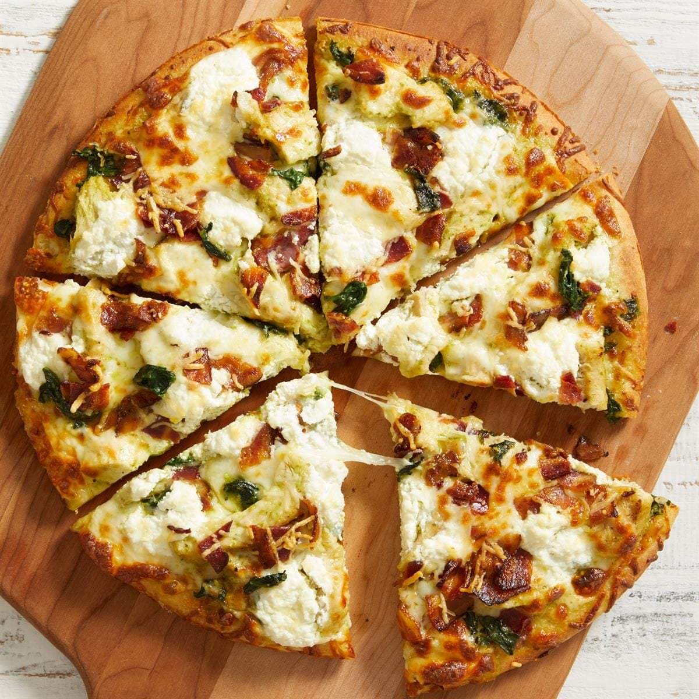

Pizza is the ultimate proof that putting basic, humble ingredients together can yield pure culinary magic. At its core, it’s just dough, sauce, cheese, and heat—yet it has conquered the world like few other foods ever have. What makes pizza so incredible is its versatility and the furious debates it inspires. You have the purists who swear by Neapolitan-style: ultra-thin, cooked in a 900°F wood-fired oven for 90 seconds, blistered to perfection, and light enough that you could eat a whole pie without blinking. Then you’ve got the heavyweights like Chicago Deep Dish, which is essentially a savory, cheesy pie with sauce on top, and Detroit-style, which bakes in a steel pan to give you those impossibly crispy, caramelized cheese edges Then there’s the science of it all. The Maillard reaction caramelizing the sugars in the crust, the acidity of bright San Marzano tomatoes cutting through the rich, fatty stretch of low-moisture mozzarella, and the way the oils from pepperoni cup up and crisp into tiny pools of spicy liquid gold. It hits every single taste receptor—salty, sweet, savory, umami. Whether it's a $2 street slice folded in half on a paper plate at midnight, a artisan sourdough pie topped with hot honey and burrata, or even a questionable frozen pizza eaten straight out of the oven, pizza almost never misses. It's the universal language of late nights, game days, and easy dinners.